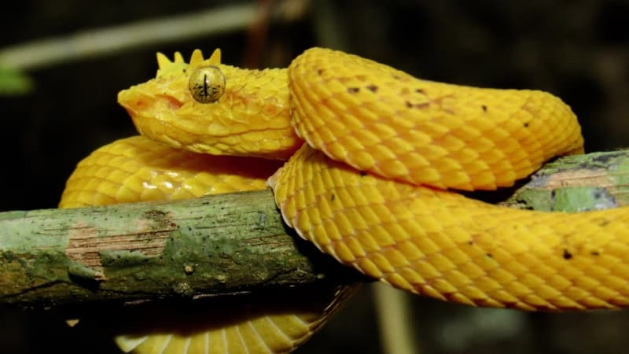

Sanca Hijau
Morelia viridis

Viper
Viperidae
Sanca kembang, ular yang memiliki nama ilmiah Phyton Reticulatus adalah spesies reptil tanpa kaki dari suku Phytonidae yang memiliki perawakan besar dan terpanjang di antara ular lain. Ukuran terbesar dapat mencapai hingga 10 meter dan merupakan ular terpanjang di dunia. Sanca kembang menyebar di hutan-hutan Asia Tenggara, di Indonesia dapat ditemukan di Sumatra, Kalimantan, Jawa, Nusa Tenggara Timur dan Sulawesi. Spesies ini hidup di hutan tropis yang lembap dan bergantung pada ketersediaan air, sehingga mudah ditemukan di pinggiran sungai, kolam, dan rawa. Mangsa utama dari sanca kembang ini adalah burung, mamalia kecil, dan reptil lain seperti biawak. Ular yang berukuran kecil akan memangsa ikan, kodok, dan kadal. Sedangkan ular yang berukuran besar akan memangsa monyet, anjing, rusa, babi hutan, bahkan manusia yang tak sengaja menghampiri tempatnya menunggu mangsa. Ular sanca kembang lebih senang menunggu daripada aktif berburu. Spesies ini memang tidak berbisa, namun untuk melumpuhkan mangsanya, sanca kembang akan melilitnya dengan kuat hingga mati kehabisan napas. Setelah mati, mangsa akan ditelan secara utuh mulai dari kepalanya.
Ular pelangi merupakan jenis ular tidak berbisa yang termasuk bagian dari suku Xenopeltidae serta memiliki nama latin Xenopeltis Unicolor. Ular jenis ini tidak berbahaya karena ular ini tidak akan menggigit, akan tetapi ia akan menggetarkan ekornya dengan kuat serta mengeluarkan cairan berbau saat di pegang, sehingga membuat kita mual. Ular ini memiliki panjang tubuh maksimal hingga mencapai tidak lebih dari 1 meter, namun pada umumnya hanya mencapai 80 sentimeter saja dengan bentuk ekor yang pendek. Mangsa utama ular ini adalah kodok, kadal dan jenis-jenis ular lain. Dinamakan ular pelangi dikarenakan warna pada bagian tubuhnya berwarna cokelat serta abu-abu kehitaman dan berkilau menyerupai warna pelangi apabila terkena cahaya. Biasanya ular pelangi tinggal di daerah yang lembab dan berawa seperti di sekitar pantai, sungai, persawahan, serta daerah hutan yang lembab. Ular ini dapat di temukan di Indonesia seperti di wilayah Sumatra, Riau, Jawa, Nias, Sulawesi dan Kalimantan.
Ular gadung adalah ular yang berbisa lemah dan tidak berbahaya, spesies ini juga berasal dari suku Colubidrae. Di wilayah barat Indonesia, ular gadung ini di kenal dengan nama ular pucuk. Dilihat sekilas ular gadung ini menyerupai pucuk tanaman gadung. Ular ini memiliki rupa berwarna hijau, bertubuh panjang dan ramping. Ada juga yang berwarna coklat kekuningan dan krem. Panjang tubuhnya dapat mencapai hingga 2 meter, meski pada umumnya hanya sekitar 1,5 meter atau lebih. Ekornya panjang dan kurus seperti cambuk. Jika merasa terganggu keberadaannya, ular gadung ini akan melebarkan, memipihkan, dan melipat lehernya menyerupai huruf S. Ular ini sering ditemui di kebun, pekarangan, semak belukar dan hutan. Ular ini jarang terlihat di tanah, rumput atau menyeberangi jalan. Ular gadung aktif pada siang hari, ular ini akan memburu mangsanya, seperti kodok, cecak, bunglon, kadal, burung kecil, dan mamalia kecil. Reptil tanpa kaki ini bersifat ovovivipar, telurnya menetas di dalam rahim dan keluar sebagai anak dengan panjang sekitar 20 sentimeter. Ular gadung dapat ditemukan di Sumatra, Jawa, Madura, Lombok, Bali, Sumbawa, dan Ternate.
Ular ini sering ditemukan pada semak-semak, kadang-kadang juga akan masuk rumah warga karena sedang mencari mangsa tikus. Saat tidak aktif, ular ini akan mengumpat di daerah tertutup, seperti taman tak terurus, di sekitar selokan dan tempat teduh lainnya. Ular ini harus ditangani dengan sangat berhati-hati.Semburan bisa tersebut dapat menyebabkan luka permanen kepada mata korban. kasus paling buruk akan menyebabkan buta permanen. Warna tubuh ular ini sangat bervariasi dari setiap tingkat warna coklat hingga hitam, namun warna yang paling sering ditemukan adalah hitam, individu muda biasanya memiliki pola pucat pada daerah tenggorokan.

Ular ini berukuran tidak terlalu besar, cenderung gemuk, dan agak pendek. Panjang rata-rata sekitar 76 cm, hewan betina cenderung lebih panjang dari yang jantan; kadang-kadang dijumpai pula spesimen yang lebih panjang, hingga 91 cm. Punggung berwarna cokelat agak kemerahan atau kemerah-jambuan. Sepanjang bagian tengah punggung dihiasi oleh 25–30 pasang corak segitiga besar cokelat gelap, berseling dengan warna terang kekuningan atau keputihan; dan puncak segitiga-segitiga itu bertemu atau berseling di garis vertebral. Sisi samping (lateral) berwarna lebih pucat atau lebih buram, dengan bercak-bercak cokelat gelap besar terletak beraturan hingga ke dekat anus. Sisi bawah tubuh putih kemerah jambuan, bebercak cokelat gelap dan terang. Keseluruhan warna punggung itu memberi kesan penyamaran yang kuat manakala ular berada di antara serasah kering. Sisi bawah tubuh Kepala menyegitiga dengan moncong meruncing; berwarna cokelat gelap, dengan sepasang pita keputihan di atas mata dan pola keputihan serupa anak panah di tengkuk. Sisi kepala cokelat gelap dan bibir berwarna putih abu-abu jambon, batas kedua warna itu berbiku-biku serupa renda. Kulit dinding mulut putih kebiruan. Sisik ventral 148-166, anal tunggal (tak berbagi), subkaudal 35-52; sisik dorsal dalam 21 (jarang 19) deret; sisik labial atas 7-9, tak ada yang menyentuh mata. Tak sebagaimana lazimnya bandotan berdekik, sisi atas kepala ular tanah tertutupi oleh perisai-perisai yang simetris. Ciri ini bersifat khas dan tak ada duanya di antara kelompok bandotan berdekik Asia.